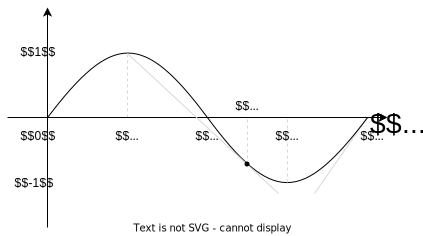

Definition
An important property of a continuous convex function f(x) is that at any chosen point x_0 for all x \in \text{dom } f the inequality holds:
f(x) \geq f(x_0) + \langle g, x - x_0 \rangle
for some vector g, i.e., the tangent to the graph of the function is the global estimate from below for the function.
- If f(x) is differentiable, then g = \nabla f(x_0)
- Not all continuous convex functions are differentiable 🐱
We wouldn’t want to lose such a nice property.
Subgradient
A vector g is called the subgradient of a function f(x): S \to \mathbb{R} at a point x_0 if \forall x \in S:
f(x) \geq f(x_0) + \langle g, x - x_0 \rangle
Find \partial f(x), if f(x) = |x|
The problem can be solved either geometrically (at each point of the numerical line indicate the angular coefficients of the lines globally supporting the function from the bottom), or by the Moreau-Rockafellar theorem, considering f(x) as a point-wise maximum of convex functions:
f(x) = \max\{-x, x\}
Subdifferential
The set of all subgradients of a function f(x) at a point x_0 is called the subdifferential of f at x_0 and is denoted by \partial f(x_0).
- If x_0 \in \mathbf{ri } S, then \partial f(x_0) is a convex compact set.
- The convex function f(x) is differentiable at the point x_0\Rightarrow \partial f(x_0) = \{\nabla f(x_0)\}.
- If \partial f(x_0) \neq \emptyset \quad \forall x_0 \in S, then f(x) is convex on S.
Subdifferentiability and convexity
Is it correct, that if the function has a subdifferential at some point, the function is convex?
Find \partial f(x), if f(x) = \sin x, x \in [\pi/2; 2\pi] 
\partial_S f(x) =
\begin{cases}
(-\infty ; \cos x_0], &x = \frac\pi2 \\
\emptyset, &x \in \left(\frac\pi2; x_0\right) \\
\cos x, &x \in [x_0; 2\pi) \\
[1; \infty), &x = 2\pi
\end{cases}
Subdifferential of a differentiable function Let f : S \to \mathbb{R} be a function defined on the set S in a Euclidean space \mathbb{R}^n. If x_0 \in \mathbf{ri }(S) and f is differentiable at x_0, then either \partial f(x_0) = \emptyset or \partial f(x_0) = \{\nabla f(x_0)\}. Moreover, if the function f is convex, the first scenario is impossible.
- Assume, that s \in \partial f(x_0) for some s \in \mathbb{R}^n distinct from \nabla f(x_0). Let v \in \mathbb{R}^n be a unit vector. Because x_0 is an interior point of S, there exists \delta > 0 such that x_0 + tv \in S for all 0 < t < \delta. By the definition of the subgradient, we have
f(x_0 + tv) \geq f(x_0) + t \langle s, v \rangle
which implies:
\frac{f(x_0 + tv) - f(x_0)}{t} \geq \langle s, v \rangle
for all 0 < t < \delta. Taking the limit as t approaches 0 and using the definition of the gradient, we get:
\langle \nabla f(x_0), v \rangle = \lim_{{t \to 0; 0 < t < \delta}} \frac{f(x_0 + tv) - f(x_0)}{t} \geq \langle s, v \rangle
- From this, \langle s - \nabla f(x_0), v \rangle \geq 0. Due to the arbitrariness of v, one can set
v = -\frac{s - \nabla f(x_0)}{\| s - \nabla f(x_0) \|},
leading to s = \nabla f(x_0).
- Furthermore, if the function f is convex, then according to the differential condition of convexity f(x) \geq f(x_0) + \langle \nabla f(x_0), x - x_0 \rangle for all x \in S. But by definition, this means \nabla f(x_0) \in \partial f(x_0).
It is interesting to mention, that the statement for the convex function could be strengthened. Let f : S \to \mathbb{R} be a convex function defined on the set S in a finite-dimensional Euclidean space \mathbb{R}^n, and let x_0 \in \mathbf{ri }(S). Then, f is differentiable at x_0 if and only if the subdifferential \partial f(x_0) contains exactly one element. In this case, \partial f(x_0) = \{\nabla f(x_0)\}.
Let f : S \to \mathbb{R} be a function defined on the set S in a Euclidean space, and let x_0 \in S. Show that the point x_0 is a minimum of the function f if and only if 0 \in \partial f(x_0).
Is it correct, that if the function is convex, it has a subgradient at any point?
Convexity follows from subdifferentiability at any point. A natural question to ask is whether the converse is true: is every convex function subdifferentiable? It turns out that, generally speaking, the answer to this question is negative.
Let f : [0,\infty) \to \mathbb{R} be the function defined by f(x) := -\sqrt{x}. Then, \partial f(0) = \emptyset.
Assume, that s \in \partial f(0) for some s \in \mathbb{R}. Then, by definition, we must have sx \leq -\sqrt{x} for all x \geq 0. From this, we can deduce s \leq -\sqrt{1} for all x > 0. Taking the limit as x approaches 0 from the right, we get s \leq -\infty, which is impossible.
Subdifferential calculus
Moreau - Rockafellar theorem (subdifferential of a linear combination). Пусть f_i(x) - выпуклые функции на выпуклых множествах S_i, \; i = \overline{1,n}.
Тогда, если \bigcap\limits_{i=1}^n \mathbf{ri } S_i \neq \emptyset то функция f(x) = \sum\limits_{i=1}^n a_i f_i(x), \; a_i > 0 имеет субдифференциал \partial_S f(x) на множестве S = \bigcap\limits_{i=1}^n S_i и
\partial_S f(x) = \sum\limits_{i=1}^n a_i \partial_{S_i} f_i(x)
Dubovitsky - Milutin theorem (subdifferential of a point-wise maximum). Пусть f_i(x) - выпуклые функции на открытом выпуклом множестве S \subseteq \mathbb{R}^n, \; x_0 \in S, а поточечный максимум определяется как f(x) = \underset{i}{\operatorname{max}} f_i(x). Тогда:
\partial_S f(x_0) = \mathbf{conv}\left\{ \bigcup\limits_{i \in I(x_0)} \partial_S f_i(x_0) \right\},
где I(x) = \{ i \in [1:m]: f_i(x) = f(x)\}
Chain rule for subdifferentials Пусть g_1, \ldots, g_m - выпуклые функции на открытом выпуклом множестве S \subseteq \mathbb{R}^n, g = (g_1, \ldots, g_m) - образованная из них вектор - функция, \varphi - монотонно неубывающая выпуклая функция на открытом выпуклом множестве U \subseteq \mathbb{R}^m, причем g(S) \subseteq U. Тогда субдифференциал функции f(x) = \varphi \left( g(x)\right) имеет вид:
\partial f(x) = \bigcup\limits_{p \in \partial \varphi(u)} \left( \sum\limits_{i=1}^{m}p_i \partial g_i(x) \right),
где u = g(x)
В частности, если функция \varphi дифференцируема в точке u = g(x), то формула запишется так:
\partial f(x) = \sum\limits_{i=1}^{m}\dfrac{\partial \varphi}{\partial u_i}(u) \partial g_i(x)
- \partial (\alpha f)(x) = \alpha \partial f(x), for \alpha \geq 0
- \partial (\sum f_i)(x) = \sum \partial f_i (x), f_i - выпуклые функции
- \partial (f(Ax + b))(x) = A^T\partial f(Ax + b), f - выпуклая функция
- z \in \partial f(x) if and only if x \in \partial f^*(z).
Examples
Концептуально, различают три способа решения задач на поиск субградиента:
- Теоремы Моро - Рокафеллара, композиции, максимума
- Геометрически
- По определению
Найти \partial f(x), если f(x) = |x - 1| + |x + 1|
Совершенно аналогично применяем теорему Моро - Рокафеллара, учитывая следующее:
\partial f_1(x) = \begin{cases} -1, &x < 1\\ [-1;1], \quad &x = 1 \\ 1, &x > 1 \end{cases} \qquad \partial f_2(x) = \begin{cases} -1, &x < -1\\ [-1;1], &x = -1 \\ 1, &x > -1 \end{cases}
Таким образом:
\partial f(x) = \begin{cases} -2, &x < -1\\ [-2;0], &x = -1 \\ 0, &-1 < x < 1 \\ [0;2], &x = 1 \\ 2, &x > 1 \\ \end{cases}
Найти \partial f(x), если f(x) = |c_1^\top x| + |c_2^\top x|
Пусть f_1(x) = |c_1^\top x|, а f_2(x) = |c_2^\top x|. Так как эти функции выпуклы, субдифференциал их суммы равен сумме субдифференциалов. Найдем каждый из них:
\partial f_1(x) = \partial \left( \max \{c_1^\top x, -c_1^\top x\} \right) = \begin{cases} -c_1, &c_1^\top x < 0\\ \mathbf{conv}(-c_1;c_1), &c_1^\top x = 0 \\ c_1, &c_1^\top x > 0 \end{cases} \partial f_2(x) = \partial \left( \max \{c_2^\top x, -c_2^\top x\} \right) = \begin{cases} -c_2, &c_2^\top x < 0\\ \mathbf{conv}(-c_2;c_2), &c_2^\top x = 0 \\ c_2, &c_2^\top x > 0 \end{cases}
Далее интересными представляются лишь различные взаимные расположения векторов c_1 и c_2, рассмотрение которых предлагается читателю.
Найти \partial f(x), если f(x) = \left[ \max(0, f_0(x))\right]^q. Здесь f_0(x) - выпуклая функция на открытом выпуклом множестве S, q \geq 1.
Согласно теореме о композиции (функция \varphi (x) = x^q - дифференцируема), а g(x) = \max(0, f_0(x)) имеем: \partial f(x) = q(g(x))^{q-1} \partial g(x)
По теореме о поточечном максимуме:
\partial g(x) = \begin{cases} \partial f_0(x), \quad f_0(x) > 0,\\ \{0\}, \quad f_0(x) < 0 \\ \{a \mid a = \lambda a', \; 0 \le \lambda \le 1, \; a' \in \partial f_0(x)\}, \;\; f_0(x) = 0 \end{cases}
Найти \partial f(x), если f(x) = \| x\|_1
По определению
\|x\|_1 = |x_1| + |x_2| + \ldots + |x_n| = s_1 x_1 + s_2 x_2 + \ldots + s_n x_n
Рассмотрим эту сумму как поточечный максимум линейных функций по x: g(x) = s^\top x, где s_i = \{ -1, 1\}. Каждая такая функция однозначно определяется набором коэффициентов \{s_i\}_{i=1}^n.
Тогда по теореме Дубовицкого - Милютина, в каждой точке \partial f = \mathbf{conv}\left(\bigcup\limits_{i \in I(x)} \partial g_i(x)\right)
Заметим, что \partial g(x) = \partial \left( \max \{s^\top x, -s^\top x\} \right) = \begin{cases} -s, &s^\top x < 0\\ \mathbf{conv}(-s;s), &s^\top x = 0 \\ s, &s^\top x > 0 \end{cases}.
Причем, правило выбора “активной” функции поточечного максимума в каждой точке следующее: * Если j-ая координата точки отрицательна, s_i^j = -1 * Если j-ая координата точки положительна, s_i^j = 1 * Если j-ая координата точки равна нулю, то подходят оба варианта коэффициентов и соответствующих им функций, а значит, необходимо включать субградиенты этих функций в объединение в теореме Дубовицкого - Милютина.
В итоге получаем ответ:
\partial f(x) = \left\{ g \; : \; \|g\|_\infty \leq 1, \quad g^\top x = \|x\|_1 \right\}
Subdifferential of the Norm. Let V be a finite-dimensional Euclidean space, and x_0 \in V. Let \lVert \cdot \rVert be an arbitrary norm in V (not necessarily induced by the scalar product), and let \lVert \cdot \rVert_* be the corresponding conjugate norm. Then,
\partial \lVert \cdot \rVert (x_0) =
\begin{cases}
B_{\lVert \cdot \rVert_*}(0, 1), & \text{if } x_0 = 0, \\
\{s \in V : \lVert s \rVert_* \leq 1; \langle s, x_0 \rangle = \lVert x_0 \rVert \} = \{s \in V : \lVert s \rVert_* = 1; \langle s, x_0 \rangle = \lVert x_0 \rVert \}, & \text{otherwise.}
\end{cases}
Where B_{\lVert \cdot \rVert_*}(0,1) is the closed unit ball centered at zero with respect to the conjugate norm. In other words, a vector s \in V with \lVert s \rVert_* = 1 is a subgradient of the norm \lVert \cdot \rVert at point x_0 \neq 0 if and only if the Hölder’s inequality \langle s, x_0 \rangle \leq \lVert x_0 \rVert becomes an equality.
Let s \in V. By definition, s \in \partial \lVert \cdot \rVert (x_0) if and only if
\langle s, x \rangle - \lVert x \rVert \leq \langle s, x_0 \rangle - \lVert x_0 \rVert, \text{ for all } x \in V,
or equivalently,
\sup_{x \in V} \{\langle s, x \rangle - \lVert x \rVert\} \leq \langle s, x_0 \rangle - \lVert x_0 \rVert.
By the definition of the supremum, the latter is equivalent to
\sup_{x \in V} \{\langle s, x \rangle - \lVert x \rVert\} = \langle s, x_0 \rangle - \lVert x_0 \rVert.
It is important to note that the expression on the left side is the supremum from the definition of the Fenchel conjugate function for the norm, which is known to be
\sup_{x \in V} \{\langle s, x \rangle - \lVert x \rVert\} =
\begin{cases}
0, & \text{if } \lVert s \rVert_* \leq 1, \\
+\infty, & \text{otherwise.}
\end{cases}
Thus, equation is equivalent to \lVert s \rVert_* \leq 1 and \langle s, x_0 \rangle = \lVert x_0 \rVert.
Consequently, it remains to note that for x_0 \neq 0, the inequality \lVert s \rVert_* \leq 1 must become an equality since, when \lVert s \rVert_* < 1, Hölder’s inequality implies \langle s, x_0 \rangle \leq \lVert s \rVert_* \lVert x_0 \rVert < \lVert x_0 \rVert.
The conjugate norm in Example above does not appear by chance. It turns out that, in a completely similar manner for an arbitrary function f (not just for the norm), its subdifferential can be described in terms of the dual object — the Fenchel conjugate function.
Characterization of the subdifferential through the conjugate function. Let f: E \to \mathbb{R} be a function defined on the set E in a Euclidean space. Let x_0 \in E and let f^*: E^* \to \mathbb{R} be the conjugate function. Show that
\partial f(x_0) = \{s \in E^* : \langle s, x_0 \rangle = f^*(s) + f(x_0)\},
In other words, a vector s \in E^* is a subgradient of the function f at point x_0 if and only if the Fenchel-Young inequality \langle s, x_0 \rangle \leq f^*(s) + f(x_0) becomes an equality.
In the case f = \lVert \cdot \rVert, we have f^* = \delta_{B_{\lVert \cdot \rVert_*}(0,1)}, i.e., the conjugate function is equal to the indicator function of the ball B_{\lVert \cdot \rVert_*}(0,1), and equation becomes.
Criteria for equality in the Fenchel-Young inequality. Let f: E \to \mathbb{R} be a convex closed function, f^*: E^* \to \mathbb{R} the conjugate function, and let x \in E, s \in E^*. The following statements are equivalent:
\langle s, x \rangle = f^*(s) + f(x).
s \in \partial f(x).
x \in \partial f^*(s).
According to Exercise above, the condition \langle s, x \rangle = f^*(s) + f(x) is equivalent to s \in \partial f(x). On the other hand, since f is convex and closed, by the Fenchel-Moreau theorem, we have f^{**} = f. Applying previous results to the function f^*, it follows that the equality \langle s, x \rangle = f^*(s) + f(x) is equivalent to x \in \partial f^*(s).